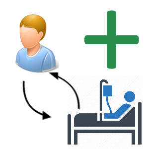

<nav class="navbar navbar-toggleable-md navbar-light bg-faded">
  <div class="container">
    <div class="navbar-header">
      <button class="navbar-toggler navbar-toggler-right" type="button" data-toggle="collapse"
              data-target="#navbarSupportedContent" aria-controls="navbarSupportedContent" aria-expanded="false"
              aria-label="Toggle navigation">
        <i class="fa fa-bars" aria-hidden="true"></i>
      </button>
      <a class="navbar-brand" href="#">LPR3 Data</a>
    </div>
    <div class="collapse navbar-collapse" id="navbarSupportedContent">
      <ul class="navbar-nav mr-auto">
        <li class="nav-item"><a routerLink="/referral" > </a></li>
        <li class="nav-item"><a routerLink="/patients"></a></li>
        <li class="nav-item"><a routerLink="/createPatient" ></a></li>
        <li class="nav-item"><a routerLink="/cancerFlow" > </a></li>
        <li class="nav-item"><a routerLink="/createEpisodeOfCareElement" ></a></li>
        <li class="nav-item"><a routerLink="/showEpisodeOfCareElement" ></a></li>
      </ul>
    </div><!--/.nav-collapse -->
  </div>
</nav>

<router-outlet></router-outlet>
